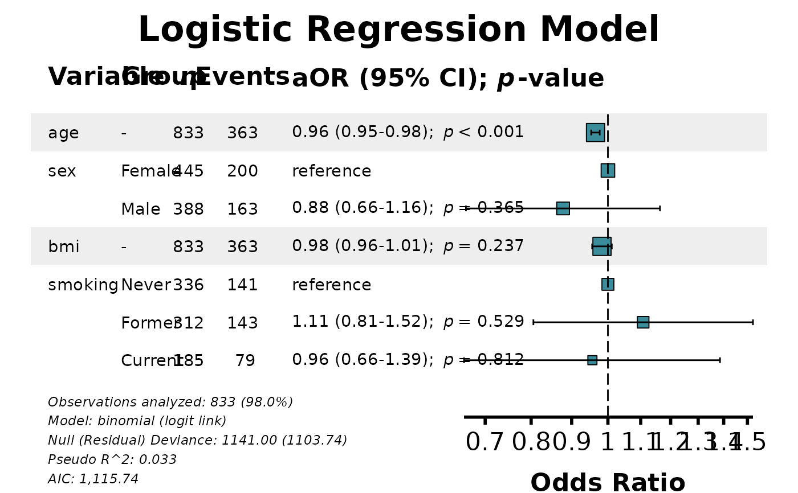
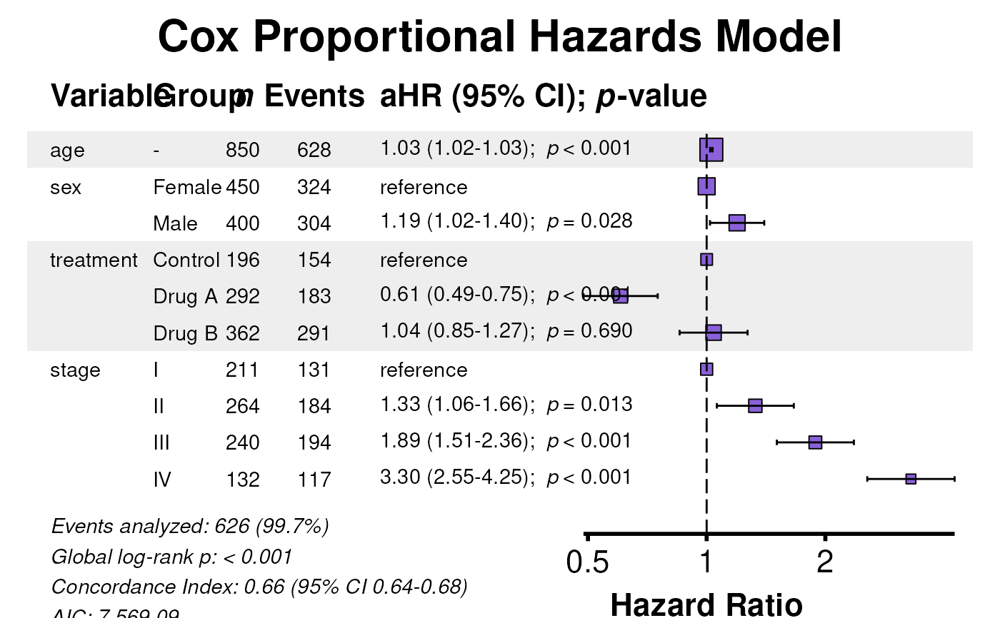
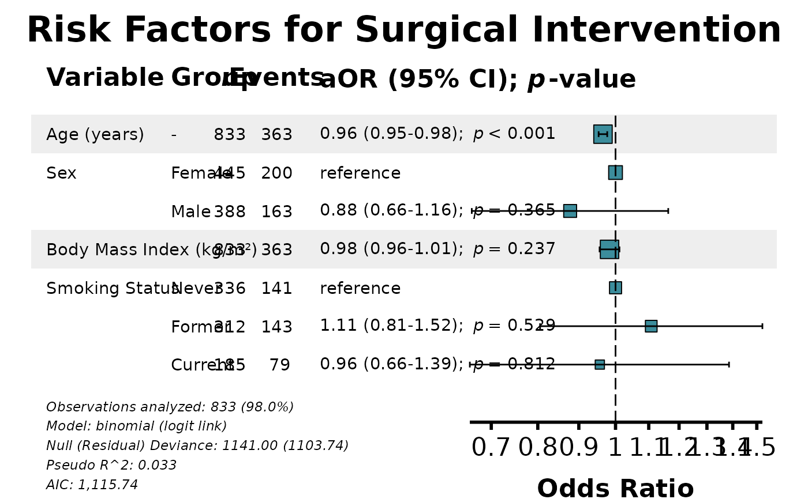
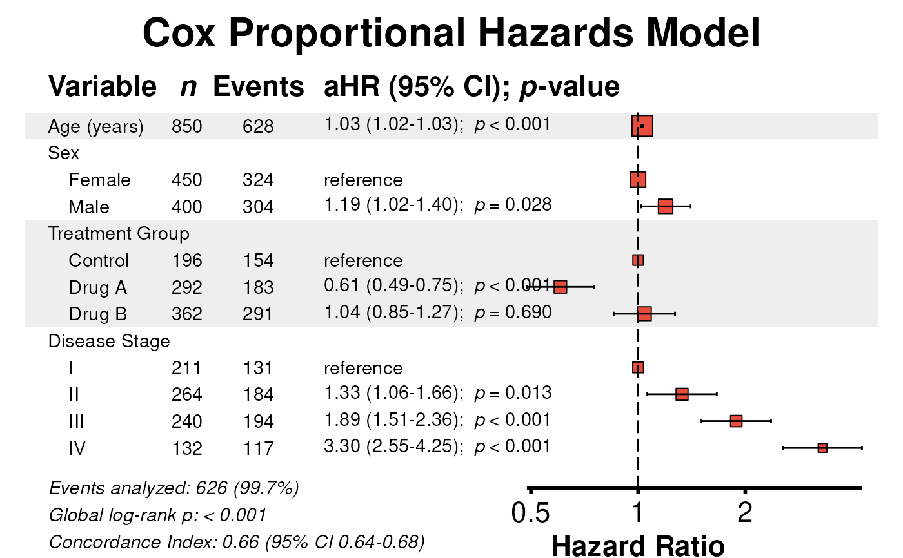
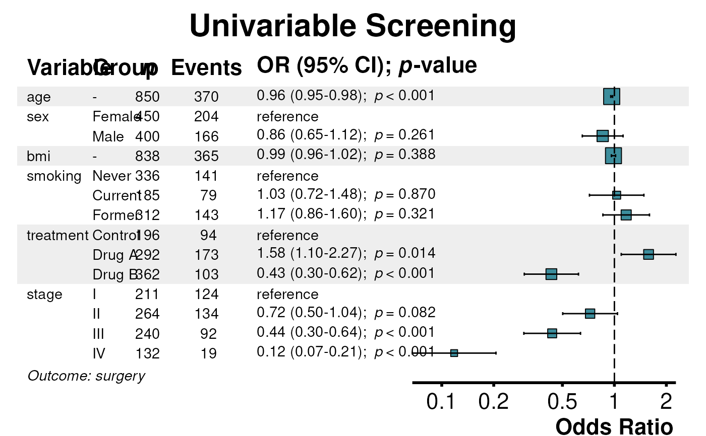
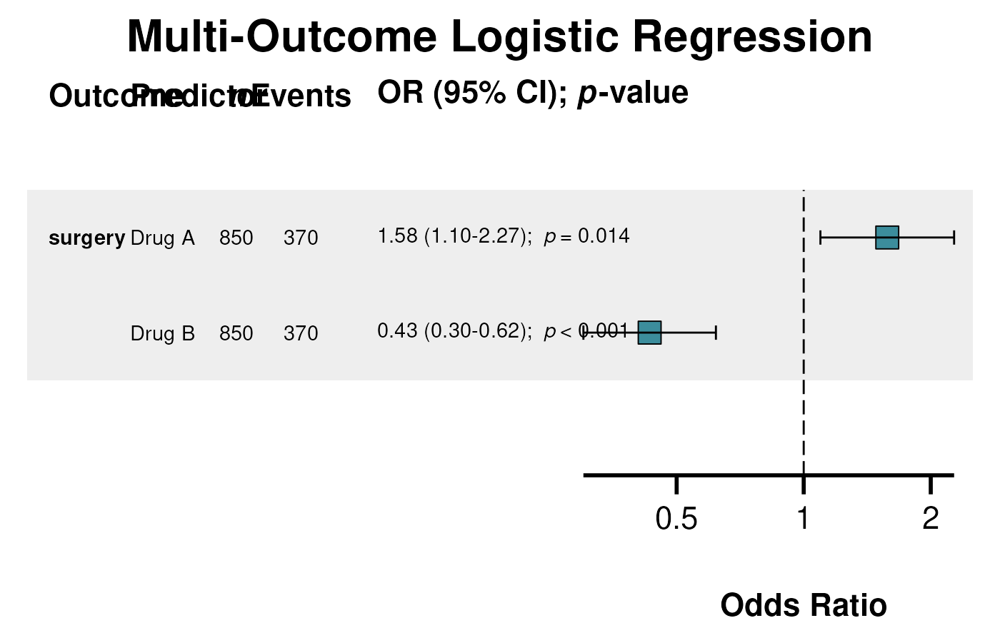
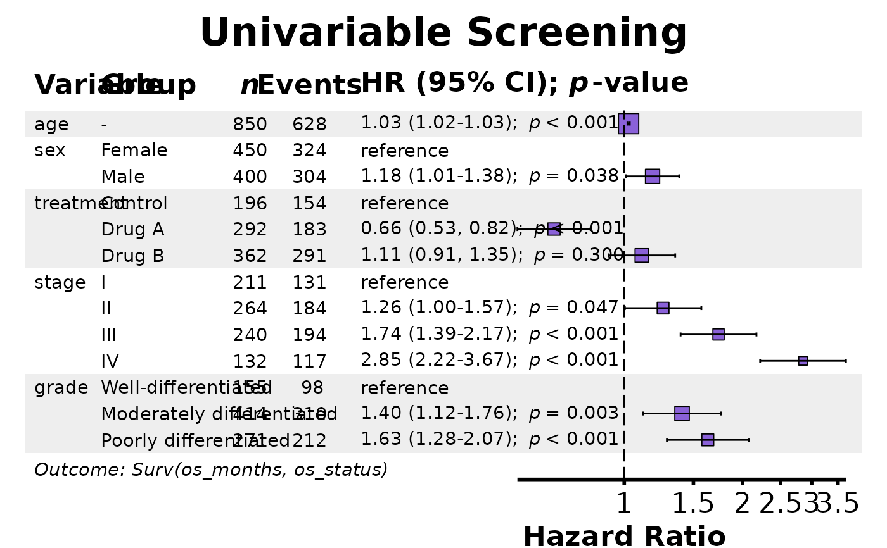
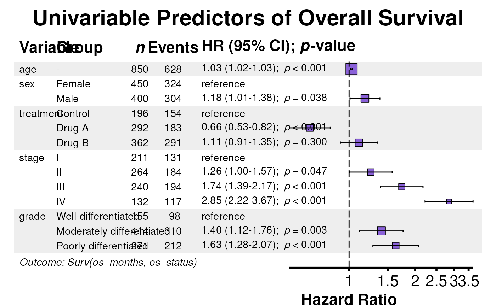
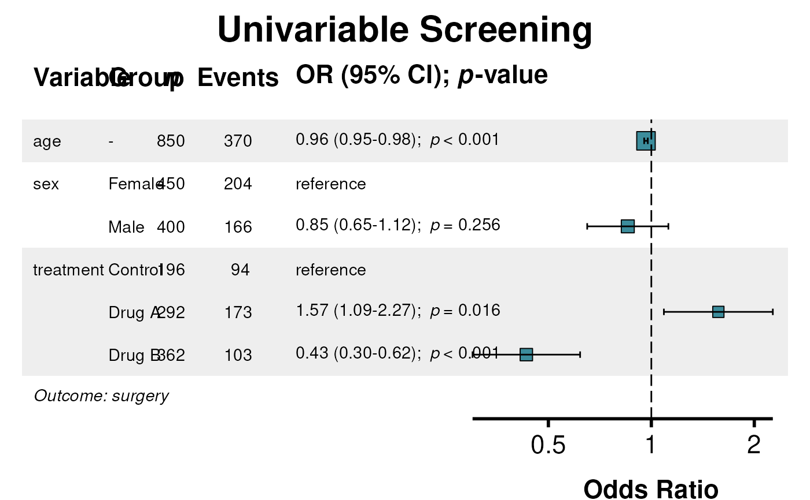

A convenience wrapper that automatically detects the input type and routes to the appropriate specialized forest plot function. This eliminates the need to remember which forest function to call for different model types or analysis objects, making it ideal for exploratory analysis and rapid prototyping.
autoforest(x, data = NULL, title = NULL, ...)One of the following:
Data frame or data.table containing the original data. Required
when x is a raw model object. Ignored when x is a result object
from fit(), fullfit(), uniscreen(), or multifit()
since these contain embedded data.
Character string for plot title. If NULL (default), an
appropriate title is generated based on the detected model type:
Cox models: "Cox Proportional Hazards Model"
Logistic regression: "Logistic Regression Model"
Poisson regression: "Poisson Regression Model"
Linear regression: "Linear Regression Model"
Uniscreen results: "Univariable [Type] Screening"
Multifit results: "Multi-Outcome [Type] Analysis"
Additional arguments passed to the specific forest plot function. Common arguments include:
Named character vector for variable labels
Number of decimal places for estimates (default 2)
Number of decimal places for p-values (default 3)
Confidence level for intervals (default 0.95)
Logical, show sample sizes (default TRUE)
Logical, show event counts (default TRUE for survival/binomial)
Logical, show model QC stats in footer (default TRUE)
Logical, alternating row shading (default TRUE)
Logical, indent factor levels (default FALSE)
Color for point estimates
Proportion of width for table (default 0.6)
Explicit dimensions
Dimension units: "in", "cm", or "mm"
See the documentation for the specific forest function for all available options.
A ggplot object containing the forest plot. The returned object
includes an attribute "recommended_dims" accessible via
attr(plot, "recommended_dims") containing recommended width and height.
Automatic Detection Logic:
The function uses the following priority order for detection:
uniscreen results: Detected by class "uniscreen_result" or
presence of attributes outcome, predictors, model_type,
and model_scope = "Univariable". Routes to uniforest.
multifit results: Detected by presence of attributes
predictor, outcomes, model_type, and raw_data.
Routes to multiforest.
Cox models: Classes coxph or clogit. Routes to
coxforest.
GLM models: Class glm. Routes to glmforest.
Linear models: Class lm (but not glm). Routes to
lmforest.
When to Use autoforest() vs Specific Functions:
Use autoforest() when:
You want quick visualization without remembering function names
You're working interactively and exploring different model types
You're writing generic code that handles multiple model types
Use the specific functions (coxforest, glmforest, etc.) when:
You need model-specific options not available in autoforest
You want explicit control over the visualization
You're writing production code and want clarity
Title Generation:
When title = NULL, titles are generated based on model type:
| Input Type | Generated Title |
| coxph | "Cox Proportional Hazards Model" |
| clogit | "Conditional Logistic Regression" |
| glm (binomial) | "Logistic Regression Model" |
| glm (poisson) | "Poisson Regression Model" |
| glm (other) | "Generalized Linear Model" |
| lm | "Linear Regression Model" |
| uniscreen (glm) | "Univariable Logistic Regression Screening" |
| uniscreen (coxph) | "Univariable Survival Analysis Screening" |
| uniscreen (lm) | "Univariable Linear Regression Screening" |
| uniscreen (glmer) | "Univariable Mixed Effects Logistic Screening" |
| uniscreen (lmer) | "Univariable Mixed Effects Linear Screening" |
| uniscreen (coxme) | "Univariable Mixed Effects Survival Screening" |
| multifit (glm) | "Multi-Outcome Logistic Regression" |
| multifit (coxph) | "Multi-Outcome Survival Analysis" |
| multifit (lm) | "Multi-Outcome Linear Regression" |
| multifit (glmer) | "Multi-Outcome Mixed Effects Logistic Regression" |
| multifit (lmer) | "Multi-Outcome Mixed Effects Linear Regression" |
| multifit (coxme) | "Multi-Outcome Mixed Effects Survival Analysis" |
glmforest for GLM forest plots,
coxforest for Cox model forest plots,
lmforest for linear model forest plots,
uniforest for univariable screening forest plots,
multiforest for multi-outcome forest plots,
fit for single-model regression,
fullfit for combined univariable/multivariable regression,
uniscreen for univariable screening,
multifit for multi-outcome analysis
# Load example data
data(clintrial)
data(clintrial_labels)
library(survival)
# Example 1: Logistic regression model
glm_model <- glm(surgery ~ age + sex + bmi + smoking,
family = binomial, data = clintrial)
plot1 <- autoforest(glm_model, data = clintrial)
#> Waiting for profiling to be done...
#> Recommended plot dimensions: width = 13.3 in, height = 5.0 in
print(plot1)

# Automatically detects GLM and routes to glmforest()
# Example 2: Cox proportional hazards model
cox_model <- coxph(Surv(os_months, os_status) ~ age + sex + treatment + stage,
data = clintrial)
plot2 <- autoforest(cox_model, data = clintrial)
#> Recommended plot dimensions: width = 12.9 in, height = 5.5 in
print(plot2)

# Automatically detects coxph and routes to coxforest()
# Example 3: Linear regression model
lm_model <- lm(biomarker ~ age + sex + bmi + treatment, data = clintrial)
#> Error in eval(predvars, data, env): object 'biomarker' not found
plot3 <- autoforest(lm_model, data = clintrial)
#> Error: object 'lm_model' not found
print(plot3)
#> Error: object 'plot3' not found
# Automatically detects lm and routes to lmforest()
# Example 4: With custom labels
plot4 <- autoforest(
glm_model,
data = clintrial,
labels = clintrial_labels,
title = "Risk Factors for Surgical Intervention"
)
#> Waiting for profiling to be done...
#> Recommended plot dimensions: width = 15.3 in, height = 5.0 in
print(plot4)

# Example 5: Pass additional formatting options
plot5 <- autoforest(
cox_model,
data = clintrial,
labels = clintrial_labels,
zebra_stripes = TRUE,
indent_groups = TRUE,
color = "#E74C3C"
)
#> Recommended plot dimensions: width = 11.8 in, height = 6.2 in
print(plot5)

# Example 6: From fit() result - data and labels extracted automatically
fit_result <- fit(
data = clintrial,
outcome = "surgery",
predictors = c("age", "sex", "bmi", "treatment"),
labels = clintrial_labels
)
plot6 <- autoforest(fit_result)
#> Error in autoforest(fit_result): Input class fit_result is not supported. Supported classes are: lm, glm, coxph, clogit, glmerMod, lmerMod, coxme, uniscreen_result, multifit_result
print(plot6)
#> Error: object 'plot6' not found
# No need to pass data or labels - extracted from fit_result
# Example 7: From fullfit() result
ff_result <- fullfit(
data = clintrial,
outcome = "surgery",
predictors = c("age", "sex", "bmi", "smoking", "treatment"),
labels = clintrial_labels
)
#> Running univariable analysis...
#> Fitting multivariable model with 2 predictors...
plot7 <- autoforest(ff_result)
#> Error in uniforest(x = x, title = title, ...): Input does not appear to be a valid uniscreen() result (missing raw_data attribute).
print(plot7)
#> Error: object 'plot7' not found
# Example 8: From uniscreen() result
uni_result <- uniscreen(
data = clintrial,
outcome = "surgery",
predictors = c("age", "sex", "bmi", "smoking", "treatment", "stage"),
labels = clintrial_labels
)
plot8 <- autoforest(uni_result)
#> Recommended plot dimensions: width = 11.2 in, height = 6.5 in
print(plot8)

# Automatically detects uniscreen_result and routes to uniforest()
# Example 9: From multifit() result
mf_result <- multifit(
data = clintrial,
outcomes = c("surgery", "complication", "readmission"),
predictor = "treatment",
labels = clintrial_labels
)
plot9 <- autoforest(mf_result)
#> Recommended plot dimensions: width = 14.2 in, height = 5.0 in
print(plot9)

# Automatically detects multifit result and routes to multiforest()
# Example 10: Survival uniscreen
surv_uni <- uniscreen(
data = clintrial,
outcome = "Surv(os_months, os_status)",
predictors = c("age", "sex", "treatment", "stage", "grade"),
model_type = "coxph",
labels = clintrial_labels
)
plot10 <- autoforest(surv_uni)
#> Recommended plot dimensions: width = 13.6 in, height = 6.2 in
print(plot10)

# Title automatically set to "Univariable Survival Analysis Screening"
# Example 11: Override auto-generated title
plot11 <- autoforest(
surv_uni,
title = "Univariable Predictors of Overall Survival"
)
#> Recommended plot dimensions: width = 13.6 in, height = 6.2 in
print(plot11)

# Example 12: Save with recommended dimensions
plot12 <- autoforest(cox_model, data = clintrial, labels = clintrial_labels)
#> Recommended plot dimensions: width = 13.7 in, height = 5.5 in
dims <- attr(plot12, "recommended_dims")
# Save to file
# ggsave("forest_plot.pdf", plot12, width = dims$width, height = dims$height)
# ggsave("forest_plot.png", plot12, width = dims$width, height = dims$height, dpi = 300)
# Example 13: Poisson regression
pois_model <- glm(n_events ~ age + sex + treatment,
family = poisson, data = clintrial)
#> Error in eval(predvars, data, env): object 'n_events' not found
plot13 <- autoforest(pois_model, data = clintrial)
#> Error: object 'pois_model' not found
print(plot13)
#> Error: object 'plot13' not found
# Automatically detects Poisson GLM, title set to "Poisson Regression Model"
# Example 14: Mixed effects uniscreen
if (requireNamespace("lme4", quietly = TRUE)) {
me_uni <- uniscreen(
data = clintrial,
outcome = "surgery",
predictors = c("age", "sex", "treatment"),
model_type = "glmer",
random = "(1 | site)",
labels = clintrial_labels
)
plot14 <- autoforest(me_uni)
print(plot14)
# Title: "Univariable Mixed Effects Logistic Screening"
}
#> Recommended plot dimensions: width = 11.2 in, height = 5.0 in

# Example 15: Quick comparison workflow
# Fit multiple model types and visualize each
models <- list(
logistic = glm(surgery ~ age + sex + treatment, binomial, clintrial),
survival = coxph(Surv(os_months, os_status) ~ age + sex + treatment, clintrial),
linear = lm(biomarker ~ age + sex + treatment, clintrial)
)
#> Error in eval(predvars, data, env): object 'biomarker' not found
# autoforest handles each appropriately
plots <- lapply(models, function(m) autoforest(m, data = clintrial))
#> Error: object 'models' not found
# Each plot uses the correct forest function automatically
print(plots$logistic)
#> Error: object 'plots' not found
print(plots$survival)
#> Error: object 'plots' not found
print(plots$linear)
#> Error: object 'plots' not found